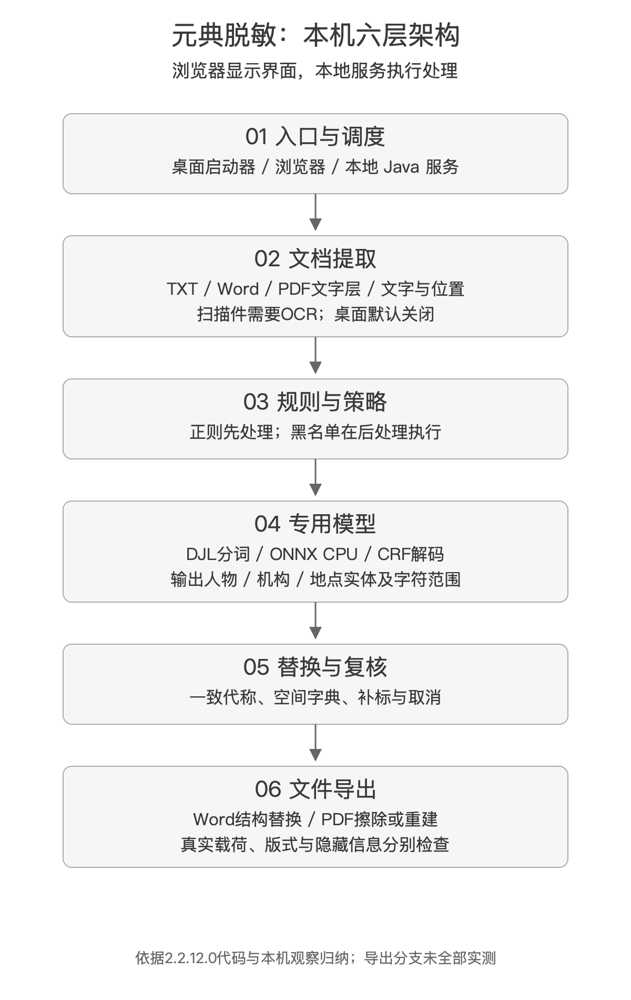
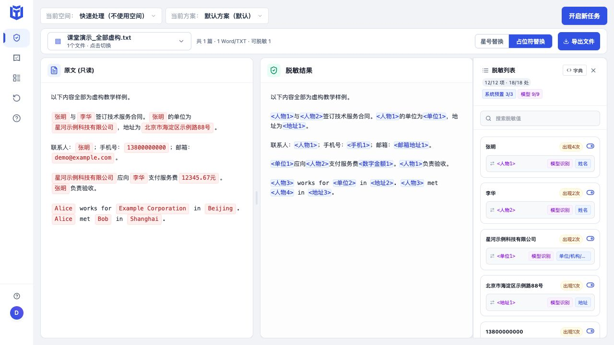
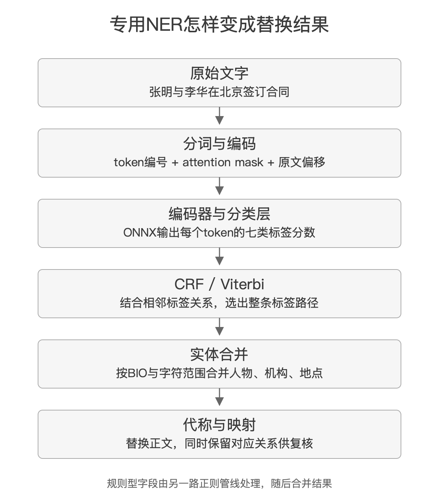

第三期四明山法师AI夜校讲到资料脱敏时，我把常见办法拆成了四类：正则规则、词典匹配、专用识别模型，以及大语言模型。课上还留了一个设想：能不能让本地模型先提炼词典，再让脚本处理整包材料？
最近，我让AI协助拆解了元典脱敏的安装包，又在本机跑了一组虚构文本。这个具体产品，刚好可以把课上那些概念接起来。
它把专门识别人名、机构、地点的模型放在本机，由Java服务调用，再接上正则、替换字典、人工复核和文件导出。浏览器负责交互，也承担部分流程编排与文件处理；模型推理在本地Java服务中完成。
整套系统可以先放进下面这张图。六层是为了讲清职责，具体请求会有不同分支，黑白名单等策略也会跨阶段生效。

课上讲的四种方法，分别在解决什么
第三期第六节，我比较完整地讲过这四种方法；第五节的作业回顾中，也讨论了脚本、网页界面和本地模型的组合。[1]
正则表达式（Regular Expression），可以理解成描述文字结构的一套规则。比如连续十一位数字，第一位为1、第二位在3到9之间，就很像常见的中国大陆手机号。用规则遍历文本，找到符合结构的片段，再做替换。
下面只是一个教学用的候选匹配式：
(?<![0-9])1[3-9][0-9]{9}(?![0-9])它能减少从更长数字中截取十一位的误报，但不证明号码真实存在，也覆盖不了所有空格、连字符或国际号码写法。身份证号、银行卡号同样需要考虑边界、校验和上下文。规则的确定性，指相同输入与配置能按相同逻辑执行，不等于这条规则已经写得足够准确。
词典匹配处理的是已知对象。先列出“张明”“星河示例科技有限公司”“某个项目代号”，再规定分别替换成什么。它不必猜词语的含义，按表执行即可。难处是维护：新案子换一批名字，简称和别名也要补进去；同样叫张明的两个人，还可能被合并。
命名实体识别（Named Entity Recognition，NER）把部分找词工作交给专用模型。它结合上下文，判断哪些片段像人物、机构、地点。这样就能发现词典里尚未出现的名称。不过，“被识别为机构”与“这份材料中的这家机构是否需要隐藏”，仍然是两个判断。
大语言模型能参与更复杂的语义提取。比如一段话没有写姓名，却把任职、经历和项目背景组合得足以让熟人对号入座。这类问题较难只靠格式规则解决。但模型也会漏、会误判，直接让它重写全文，还要防止改动原意。部署在哪里、处理多少材料、怎样保留位置和证据，也都要考虑。
| 方法 | 它主要依靠什么 | 容易遇到的边界 |
|---|---|---|
| 正则规则 | 字符格式、上下文规则和校验 | 非标准写法、形似字段、规则遗漏 |
| 词典匹配 | 已知名称与对应关系 | 新名称、别称、同名异人 |
| 专用NER | 训练得到的实体识别能力 | 领域差异、实体范围、未训练的类别 |
| 大语言模型 | 更广泛的语义理解与指令执行 | 漏判、改写、成本和结果稳定性 |
这几种方法可以混用。课件中的分类是一张选型地图，不能据此给所有模型排能力高低。专用NER在明确任务上可以很合适；大模型的通用理解能力，也不自动转化成更可靠的文件处理。
还有一个经常混在一起的问题：找到信息之后，怎么处理？
“138****0000”是部分遮盖；“人物1”是代称；删掉一整段是删除；把精确住址改成城市或区域是泛化；对数字加扰动更常见于统计发布；哈希、加密则有各自的用途和威胁条件。识别技术与处理动作，应当分开选择。Presidio的技术文档也把识别器和替换操作分成两个模块。[2] 这里借它说明通用设计，并不表示元典采用了Presidio。
我在课上强调过本地处理。这个前提要说准确：如果目标是原稿不出本机，把原稿上传公网服务后再脱敏，就无法满足这个目标。经批准的内网、受控云环境或其他使用目的，应另行判断，不能只凭“云端”两个字下结论。
课程中的组合设想，与元典的执行顺序有差别
第六节我提出过：给本地模型少量代表性材料，让它提炼词典，再用脚本的正则和词典处理剩余文件。回看逐字稿，那时我说得很清楚：“我自己还没有试。”这是一条建议探索的路线。[1]
元典本机版体现了另一种组合。它对文档提取文字，先运行规则，再把相应文本送入NER，得到实体位置后生成替换和映射。模型会参与分段识别，不是只看一两份代表文件，然后全部依赖预先生成的词典。
两条路线的共同点，是把语义识别与确定性的替换分开。差别在于模型介入多少材料，以及词典从哪里来。
| 问题 | 课堂提出的组合设想 | 本次查到的元典路线 |
|---|---|---|
| 模型主要读什么 | 少量代表性材料 | 待处理文本的相应分段 |
| 新实体从哪里发现 | 先从代表材料提取，之后补充 | NER继续从当前文本发现 |
| 词典的作用 | 作为批量替换的重要输入 | 还承担结果一致化与跨文件复用 |
| 需要防什么 | 代表材料没覆盖的新名称 | 模型漏识别、分块截断及实体边界错误 |
没有做同一批资料的对照评测，我不会据此说哪条更快、更准。对准备自建工具的同行，这个比较更实际的用处，是先想清楚：新文件里出现的新名字，准备在哪一步被发现？
第一层：桌面图标打开的，是本机服务的界面
这次安装包有1,688,222,984字节，按十进制换算约1.69GB。看到这个体积，我最初的判断就是里面可能放了模型。拆开之后，这个方向得到了证据支持。
但桌面的“元典脱敏.app”很小，整个入口约134KB，主启动脚本只有619字节。它调用启动脚本，唤起由macOS后台服务管理机制launchd管理的Java进程，然后让浏览器打开本地页面。
实际观察到的服务地址是127.0.0.1:8080。127.0.0.1是回环地址，请求指向这台电脑自己。浏览器中的页面通过同源/api访问后端。前端使用Vue、Pinia和Vue Router，后端是Spring Boot与嵌入式Tomcat，并随包提供Java 21运行环境。
这解释了为什么它看起来像网站，又能使用本地模型。网页是一种界面形态，计算位置还要继续看请求去了哪里。
安装目录的主要结构如下，省略了无关文件：
Desensitization/
├── backend.jar Java服务与业务依赖
├── jre/ Java运行环境
├── web/ 网页、脚本、字体与预览资源
├── ydner_onnx/
│ ├── model.onnx.enc 加密模型资源
│ ├── tokenizer.json.enc 加密分词资源
│ ├── config.json.enc 模型配置
│ └── ner_metadata.json.enc 标签与CRF信息
├── scripts/ 启动和服务管理
└── data/ 随包数据目录运行时的历史、缓存等还涉及应用支持目录，不能只检查这个树就认定所有资料都在其中。
| 组成 | 常规文件大小，约 | 安装目录占比 |
|---|---|---|
| 模型和分词资源 | 1243.3MB | 67.21% |
| Java后端及依赖 | 385.5MB | 20.84% |
| Java运行环境 | 157.6MB | 8.52% |
| 网页资源 | 62.2MB | 3.36% |
单个model.onnx.enc就有约1.23GB。包大，在这里确实主要与模型有关；它仍然不能直接回答参数量、量化精度或训练水平。本次还把安装包载荷与已安装程序的八个关键文件做了哈希比对，模型、后端和主要前端文件均一致，避免分析到另一个版本。
第二层：文件里的文字，要先被完整读出来
TXT已经接近模型需要的输入。Word和PDF要复杂得多。
DOCX本质上是一个装着XML和其他资源的ZIP容器。你看见的一个姓名，可能被Word拆到几个文本片段里；页面上的名字，也可能出现在页眉、页脚、批注、脚注或修订记录中。软件需要先找到这些内容，再保留它与原文件位置的关系。
后端的文档提取服务可以追到正文、页眉页脚、批注、脚注尾注和超链接等处理分支。旧DOC格式先转换成DOCX。部分解析异常还会进入ZIP/XML兜底路径。这些工作发生在实体识别之前，漏读了哪一块，后面的模型再好也看不到。
PDF又要先区分文字层与扫描图。文字层可以提取字符，扫描件只有像素，需要光学字符识别（Optical Character Recognition，OCR）把图像转成文字及位置。
OCR与NER解决不同的问题。OCR回答图上写着什么，NER回答这段文字中哪些片段像人名、机构和地点。这次查到的1.23GB资源是NER模型，不能因为软件支持某些PDF处理，就把它叫作OCR模型。
本机桌面默认配置关闭OCR，随包说明也区分了单机版与服务端的图片、扫描件能力。后端代码中存在OCR分支，不等于这台电脑当前就能用该功能。选择工具时，应拿自己的文件类型测试，不能只看一个“支持PDF”的标签。
第三层：完整界面里，规则和模型各有分工
为了看清实际效果，我创建了一份全部虚构的TXT，放入张明、李华、示例公司、住址、手机号、邮箱、金额，以及一段英文。选择快速处理、不使用空间，沿用默认方案，然后在本地界面运行。

界面显示12项、18处。右侧进一步区分为系统预置规则3项、模型识别9项。手机号、邮箱、金额来自规则；中英文人名、公司和地点来自模型。张明出现四次，使用同一个代称；重复公司名和Alice也保持一致。
这一点值得和前一轮接口测试放在一起看。当时单独调用AI脱敏入口，张明被替换，手机号和邮箱保持原样。若只看那次输出，很容易写成“软件漏掉了电话号码”。完整文件流程的这张图，说明正则是另一条处理路径。测试边界不写清，结论就会错位。
前端主流程能追到：先保护白名单词语，执行正则，再调用AI；之后过滤未选中的AI类型、恢复保护词、强制处理黑名单，最后归并同原文的代称和编号。文件后端入口同样存在规则先行、AI补充的流程。不同入口的编排细节应分别看，不能把一个接口当作整套产品。
白名单的技术做法，是把需要保护的字串临时改成特殊标记，末尾恢复。黑名单则在后处理阶段强制处理指定内容。遇到重叠实体，还要确定取哪一个范围；替换时从后向前做，可以避免前面的字数变化破坏后续位置。
这些听上去都是小事，但它们决定了一个脱敏工具遇到真实材料时，会不会把同一个名字换出几种编号，或者把一个公司名切成几段各自替换。
第四层：专用模型怎样找出人物、机构和地点
本地模型配置中的架构名称是GteCrfNerModel。查到的主要信息包括：12层、768维隐藏表示、12个注意力头，以及250048的词表规模。标签只有人物PER、机构ORG、地点LOC三类，加上BIO标记，组成七标签。
BIO可以这样理解：B是一个实体的开头，I是实体内部，O是实体之外。下面按片段作标签示意，不是这句话的真实分词日志：
| 片段 | 标签示意 | 含义 |
|---|---|---|
| 星河 | B-ORG | 机构开头 |
| 示例、科技、有限公司 | I-ORG | 继续属于同一个机构 |
| 签订合同 | O | 不属于这组三类实体 |
真正执行时，先由分词器tokenizer把文字编码为token编号，并记录它们对应的原文字符范围。Java准备input_ids和attention_mask两个输入；后者用于说明批次中的哪些位置是有效内容、哪些是补齐位置。
模型由ONNX Runtime调用。ONNX是一种模型交换格式，ONNX Runtime负责执行相应计算；本包会话选项明确使用CPU。本次没有建立CoreML、GPU或Apple神经网络引擎已启用的证据。[3]
模型运行后，Java取出每个token对各标签的分数，再进行条件随机场（Conditional Random Field，CRF）解码。这里使用Viterbi动态规划：结合当前位置得分与前后标签转移关系，寻找整条序列的标签路径，然后回溯。它能考虑标签之间的关系，但不保证结果一定正确。

这条路径中的模型没有生成一篇改写后的文章。它先给出可用于判断实体类别的分数，Java再解码、合并原文片段，交给替换逻辑。原文位置能被保留下来，也就有条件在界面上逐项标注和撤销。
本地配置与Alibaba-NLP公开的gte-multilingual-base在层数、维度、词表及位置配置等方面高度相似，后者官方模型卡列示为305M的编码器模型。[4] 这使它成为很有根据的候选基座，但配置相似还不是权重身份的证明。确切checkpoint、训练语料、是否做过法律领域微调，本次没有查明。
我也不会把分词器名XLMRobertaTokenizerFast直接写成“采用XLM-R模型”。分词器类型与编码器基座身份，不能这么一一对应。
模型文件采用加密封装，代码设计为在内存中解密权重并建立推理会话，小型配置和分词资源还有临时文件加载路径。本次只解析了小型配置，没有恢复大模型权重。模型资源加密，与用户文档、历史数据库或备份是否加密，是不同的问题。
第五层：同一个名字怎样一直叫“人物1”
识别出张明以后，系统还要记住它已经分配过什么代称。这是词典再次发挥作用的地方。
实际界面的“字典”弹窗中，可以看到这样的对应关系：
{
"<人物1>": "张明",
"<人物2>": "李华",
"<单位1>": "星河示例科技有限公司",
"<手机1>": "13800000000"
}这份字典的方向是代称到原文。保留它，就有恢复原始文字的条件。所谓可还原脱敏，至少在这条路径上依赖对应关系，并没有凭空让原文消失。
空间字典还可以把同一套编号延伸到多个文件。对一包合同、函件和往来记录，这比每份文件都从“人物1”重新开始更容易复核。
但字串一致与身份一致要分开。“张明”在所有位置都替换成同一代称，只能说明相同原文被复用；“张总”是不是同一个人，两位同名人物是不是应分开，还涉及实体消歧和业务判断。本次没有验证产品能自动解决这些问题。
界面提供取消误报、补充漏报、按特定出现位置处理等交互，说明人工复核本来就在产品流程中。模型漏掉项目别称，可以补进规则或字典；错误隐藏了不应隐藏的词，也应能撤销，而不是只能接受一篇已经整体改写的结果。
NIST关于去标识的技术指南也提醒，只有遮盖功能的工具未必完成了充分的去标识，评价还应考虑分享目标和再识别风险。[5] 对这类可还原文档而言，原件、代称表、历史记录分别由谁保存，至少值得和正文替换放在一起考虑。
第六层：界面变了，下载文件也必须真改了
这是我这次拆解中觉得最值得同行关注的一层。识别结果已经显示出来，距离拿到一个处理正确的文件，还有一段路。
Word导出需要把原文位置映射回原文件。浏览器代码与Java后端都有相应的XML替换实现，不同入口会走不同路径。代码中可以追到跨多个w:t文本节点拼接索引、定位命中范围，再从后往前替换的逻辑；还涉及页眉页脚、批注、脚注尾注，以及删除修订、域指令和超链接目标。
脱敏导出路径有清理作者、修订者、时间、文档属性和嵌入对象的实现。它的价值在于：一个人的名字可能已经从正文消失，却仍留在批注作者、修订记录或文档属性里。
不过，代码也有匹配失败的告警：“该处不会脱敏。”保留原版式的路径失败后，还可能回退成由正文新生成的Word。部分无映射调用路径会直接返回原字节，因此也不能只因为存在清理函数，就认定每次导出都执行过全部清理。
PDF至少要分三条路径看。
一条是改写文字内容流。PDFBox解析文字绘制操作符，修改字符串或数组，并处理字体编码和位置补偿。这涉及底层文字载荷。
另一条是标密导出。代码会先尝试擦除文字，再做几何检查、清理隐藏信息和绘制黑框；部分页面可回退为栅格图。这里也存在擦除未命中后继续清理并画框的降级分支，所以不能把“导出了黑框”当作底层文字一定已清除的证明。
还有一条是把页面渲染成图，修改目标区域的像素，再重新建立PDF；必要时补充跳过打码区域的文字层。它要依靠OCR坐标或人工框选，把需要处理的内容准确落到页面上。
这些路径不能混为一谈。本机默认还关闭了OCR和原PDF内容流替换导出的一些开关，界面也存在单机能力限制。通用后端具备某段代码，与当前桌面入口允许使用它，是两回事。本次没有对复杂Word及上述各类PDF成品做全面验证。
我实际验证了一条较小但完整的路径：从界面导出刚才那份虚构样例为TXT，再直接读取下载文件的字节。输入中的12个已知实体字符串均未检出，代称重复一致。这证明该TXT的真实输出与界面结果相符，不能外推为所有文件都没有残留。
实际使用时，可以在副本上处理，保留原件；下载后搜索已知名称，检查批注与属性，再视格式提取全文或查看内容流。搜索不到一个名字，只能回答这一次搜索的问题，仍不能替代对组合身份线索和隐藏内容的检查。
长段落实测，暴露了配置数字以外的限制
本地模型配置里有8192，分词器配置里还有32768。如果只读到这里，很容易把它们写成产品支持的上下文长度。
继续沿Java调用链看，问题出在实际分词器加载方式。应用使用捆绑DJL的默认入口，没有传自己的长度选项；这条路径默认采用512 token截断，没有看到对溢出token的恢复处理。外层另有按字符分块与并行机制，内层则分句、按批次补齐。这些限制是叠在一起的。
先做纯分词器探针：给同一分词器加载路径4800字的无句末标点字符串，返回512个token，字符范围只覆盖到约第741字。741只对应这一串文字，不能换算成统一的中文字数上限。
再做本机真实API对照。两组输入都在开头放“张明在北京工作”，中间重复200次虚构教学说明，尾部放“李华在上海工作”。区别是第二组加上了句号。
| 样本 | 实际字符数 | 开头 | 尾部 |
|---|---|---|---|
| 无分句长段落 | 3814 | 张明、北京得到替换 | 李华、上海保留原样 |
| 加句号长段落 | 4016 | 张明、北京得到替换 | 李华、上海得到替换 |
这个现象与分句、截断机制吻合。外层把长文按字符切成块，并不保证块内的每个长句编码后都在512 token以内。加了句号，内层才更容易把它分成适合处理的句子。
样例还出现了另一种不理想结果：模型把“在北京”整体当作地址片段，而没有只取“北京”。漏识别和范围偏移，都是复核时要看的东西。
这组反例发生在最小AI接口路径，不能直接说所有UI文件入口、所有方案都会如此；更不能用它计算产品的总体召回率。但它足以提醒我：讨论模型长度，要沿着产品实际加载、分块和截断的方式看，不能停在配置文件的一个数字上。
回到法律人的使用场景，应该怎样评价这条路线
经过这次拆解，我会把“专用模型+规则+字典”视作一条值得理解的本地处理路线。它让模型承担相对明确的语义识别任务，再用程序管理位置、编号和文件结构。它能否适合具体材料，仍要拿材料类型和处理目标来验证。
所谓本地，也需要沿路径继续看。当前观察到的是回环监听与本地NER，所查本地NER分支失败时直接报错，没有自动转远程。通用后端同时存在远程NER、OCR、对象存储、登录及版本配套代码，另有默认关闭的可选语义扩展。这些代码不能证明桌面当前全部启用，也不能因此保证程序从不联网。本次没有做持续出站流量审计，或通过断网测试覆盖全部功能。
如果准备选用或自己搭一套系统，我更愿意先拿一份虚构材料，把这几个问题跑一遍：文件是否完整读出；固定号码与语义实体各由谁识别；重复原文是否一致；漏掉的别称能否补充；导出后载荷和元数据是否处理；原文、字典、历史又存在哪里。
这里面任何一个答案含糊，都不宜用一句“用了AI模型”带过去。
课上那条“模型提炼词典、脚本处理全包”的设想，也可以放到同样的检查中。代表材料里没有出现的人名，后续文件怎样发现？词典替换跨过Word格式片段时怎么办？只在正文中搜索过，能否说明批注里也处理了？这些问题决定了一个脚本距离可复用工具还有多少工作。
作为律师，我最终关心的是，工具处理后的材料是否仍表达原来的关系，是否按预定范围隐藏了信息，以及出了问题能不能对回原件和处理记录。这次的虚构TXT能把18处替换落到下载文件里；长段落测试又留下了一个需要继续追查的尾部漏识别。把成功路径和边界一起保留下来，比只展示一张看起来很干净的结果截图，更适合带回夜校讨论。
材料与技术出处
[1] 四明山法师AI夜校第三期：第五节课堂实录00:26:36—00:29:35；第六节课堂实录01:21:19—01:30:37，及第六节课件“数据治理的第一步：脱敏”。课程内容按实际实录校订转述，口头设想与本次实测分别表述。
[2] Presidio：Text anonymization。仅用于说明识别与操作分层的通用设计。
[3] ONNX Runtime Java官方文档。产品的CPU选择依据本机字节码调用链。
[4] Alibaba-NLP：gte-multilingual-base公开配置、官方模型卡。候选基座对照不等于权重身份确认。
[5] NIST SP800-188公开摘要。本文将其作为去标识技术参考，不作中国法律适用依据。
产品分析依据：元典脱敏2.2.12.0安装包、相同关键文件的已安装程序、REA前端静态观察、Java字节码、非敏感模型配置与虚构样本。本次未建立训练集、法律领域微调、总体准确率、全部网络行为及所有文档导出安全性的结论。复核定位与样例另附技术材料。
作者简介： 陈石律师（主页 chenshi.ai），浙江海泰律师事务所副主任、高级合伙人、房地产与建设工程部主任，第十届宁波市律师协会常务理事、第七届宁波仲裁委员会仲裁员，聚焦建筑房地产、投融资、并购重组及商事争议解决。曾获多家法律媒体与专业机构认可，荣登 LegalOne 2025 中国区建工及房地产实务先锋 45 强、律新社 2025 年度管理合伙人 20 佳（华东），入选《商法》The A-List 法律精英，获评 ALB China 区域市场十五佳长三角地区律师新星，并获律新社 2024 年度并购领域品牌之星。长期为万科、华润置地、信达地产、保利置业、招商蛇口、中海地产等企业提供法律服务，承办“首宗百亿地王”“长春第一高楼”“台州第一高楼”等代表性项目，累计服务项目投资额超千亿。近年来持续推动 AI 与法律实务融合，强调以结构化方法打通技术逻辑、法律判断与商业场景；著有《赋能法律人：AI 底层思维与应用范式》，并在多地开展相关主题讲座与分享。